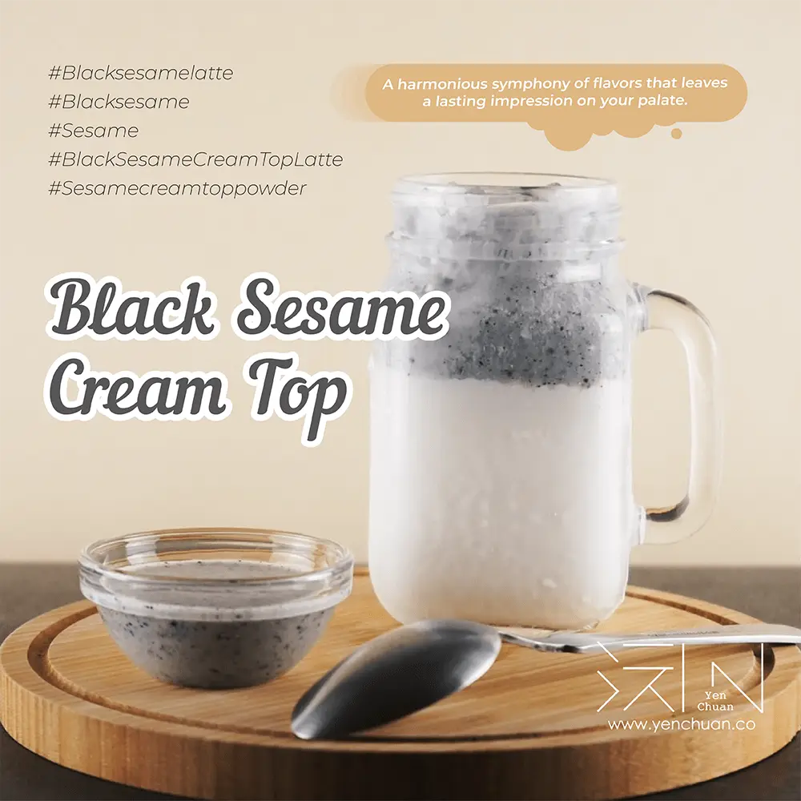

文章 / 飲品配方與資訊
Open sesame, it’s Black Sesame Cream Top Latte!
這篇是英文原文，尚未完成繁體中文翻譯。中文選單與相關商品連結不會切回英文介面。

查看英文原文（尚未翻譯）
Black sesame is no stranger to the culinary world. Its distinctive flavor profile and nutty aroma have long been enjoyed in traditional Asian cuisine, particularly in desserts and sweets.
Want to do something more about this classic flavour? Try beverages – This black sesame cream top is a good place to start!

Why black sesame?
By infusing sesame into milk, you can easily create a memorable treat.
The slightly bitter and earthy notes of black sesame harmonize beautifully with the sweetness of the milk, creating a flavor combination that is both intriguing and comforting.
Creamy goodness!
However this is no ordinary sesame drink. Instead of simply mixing the sesame into the milk, we opted for a sesame cream top!
The creamy foam adds additional complexity, bringing extra texture and richness to the sesame mix. Both the salty sweetness and velvety creaminess of the cream top kicks the drink up a notch, making it the perfect companion to sesame’s toasted notes!

Every sip of the latte is a multi-layered sensation: The aroma of black sesame wafts through the air, tantalizing your nose.
As the velvety foam touches your lips, the distinctive black sesame flavor unfolds, blending into the cream top’s natural rich creaminess. Finally, you get to the milk underneath, the perfect milky notes to end your journey.
With such a beautifully harmonized symphony of flavours, it’s sure is a drink to yearn for!
What makes this drink so attractive is not just the exquisite flavours, but also its appearance! The contrasting layers of black sesame cream top and snowy white milk create a striking presentation.
Want to shout your love for this drink to the world beyond? Snap an aesthetic picture and share it on Instagram, or mix up a couple glasses for family and friends!
Can’t wait to give this captivating drink a try? Let’s begin!

Black sesame cream top latte
A harmonious symphony of flavors that leaves a lasting impression on your palate.
What you’ll need
How to brew
Add sesame cream top powder and 100ml water to the mixing bowl, mix well.
Add 100g of ice cube to the mixture from step one and beat until thick and frothy but still slightly runny
Fill the glass with 300ml milk and 100g of ice cubes. Pour in the mixture from step 1-2 and serve!
Open Sesame!
With its enticing aroma, delightful aesthetics, and the interplay of rich and savory flavors, this latte promises to captivate your senses and leave you craving for more.
Contact us to get started!